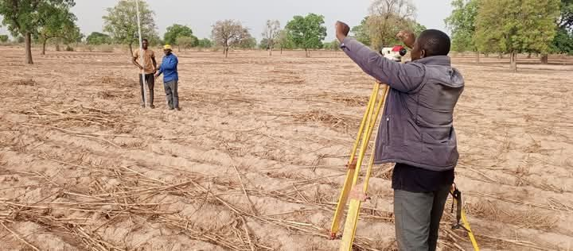
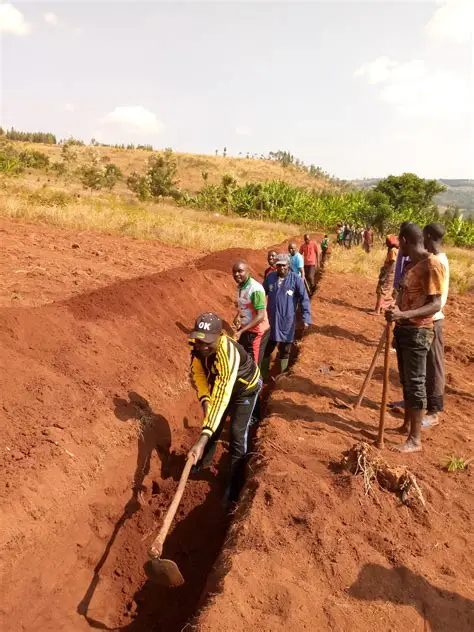
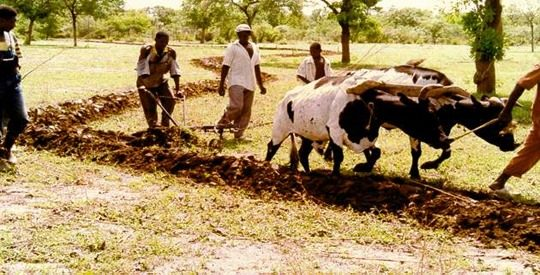
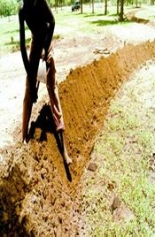
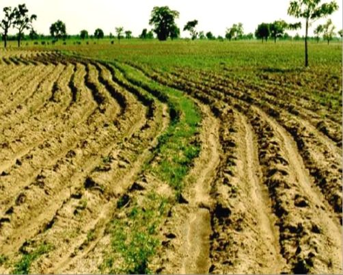

Aménagements en Courbes de Niveau (ACN)
Restaurer les sols, lutter contre l'érosion et améliorer durablement la productivité agricole
Qu'est-ce que l'aménagement en courbes de niveau ?
L’aménagement en courbes de niveau (ACN) est une technique de conservation des eaux et des sols qui consiste à tracer des lignes perpendiculaires à la pente, permettant de ralentir le ruissellement, favoriser l’infiltration de l’eau et réduire l’érosion. ZAMOHO maîtrise cette technique et l’a déployée sur plusieurs centaines d’hectares au Mali.
Objectifs : restaurer les terres dégradées, améliorer la fertilité, augmenter les rendements et préserver l’environnement.
Rétention d'eau
Augmente l’infiltration et réduit le ruissellement, améliorant la réserve hydrique des sols.
Lutte anti-érosive
Prévient le ravinement et la dégradation des terres cultivées.
Rendements accrus
Les sols mieux conservés et fertilisés produisent jusqu'à 40% de plus.
Restauration écologique
Favorise la régénération naturelle et la biodiversité des sols.
Notre méthodologie
1. Diagnostic
Étude topographique, analyse des pentes, identification des zones sensibles à l'érosion.
2. Traçage des courbes
Utilisation de niveaux optiques (WILD NK1) pour tracer des lignes parfaitement horizontales.
3. Aménagement
Création de digues, fossés, cordons pierreux ou végétaux selon le contexte.
4. Suivi & entretien
Accompagnement des producteurs pour l’entretien annuel des ouvrages.





Nos réalisations en chiffres
- 255 courbes de niveau réalisées
- 121 hectares aménagés dans les cercles de Kita, Kati, Dioïla et Koutiala
- Projet AEDTT 2 (AMEDD) : restauration des terres dégradées
- Plus de 500 producteurs formés à la technique ACN
- Réduction moyenne du ruissellement : 60% sur les parcelles traitées
Vous souhaitez aménager vos terres ?
Contactez-nous pour une étude gratuite et un devis personnalisé.
Demander un aménagement ACN